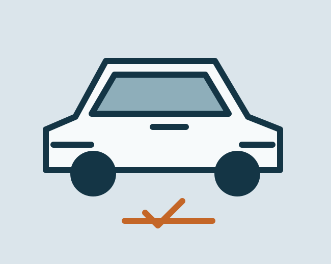

01
RevisiónRevisión de coches usados
Inspección de vehículos de segunda mano anunciada en la web oficial.
Una propuesta de web para explicar los servicios del taller de forma clara. Mecánica, mantenimiento y revisión de vehículos usados.
Explorar la propuestaProbar formularioDiseño propuesto. No es la web oficial del negocio.

Inspección de vehículos de segunda mano anunciada en la web oficial.
Preparación y gestión de ITV, según la información del negocio.
Diagnóstico y reparación de sistemas mecánicos y electrónicos.
Servicios de mantenimiento publicados por el taller.
Cambio de neumáticos y alineación anunciado en la web oficial.
Revisión y reparación de aire acondicionado y calefacción.
La web oficial de Alsan Motor presenta un taller en Pinto con servicios de mecánica y revisión de vehículos usados, tanto en su taller como a nivel nacional. Esta propuesta es un ejercicio de desarrollo, no una web aprobada por la empresa.
Datos de la web pública consultada. Confirma cualquier visita con el negocio.
Horario pendiente de confirmar. No aparece en las páginas oficiales consultadas para este prototipo.
Fuente: web oficial, consultada el 26/10/2026. Puede cambiar o tener excepciones por festivos. Este prototipo no comprueba si está abierto.
El formulario solo comprueba campos. No envía correos, no guarda datos y no comunica nada al negocio.
Probar validación PHP